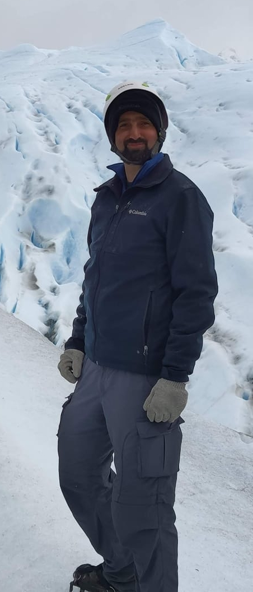
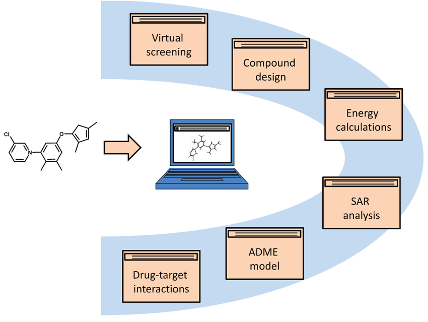

About Me

Hello, my name is Omri Wolk.
I am a pharmacist and an aspiring data scientist with a strong interest in computer-aided drug discovery (CADD).
I am developing my skills in PyTorch and AI principles to create predictive models that find the drug "niddles" in the molecular "haystack".
Personal Qualities

I am an enthusiastic learner who takes pride in the quality of my work. I am meticulous on biological, chemical and computational aspects of CADD, and so I get results.
I work well independently, but I am also comfortable collaborating with others. I value communication, patience, and persistence.
Career Goals
My goal is to develop computational tools that will put affordable drugs into patients' hands.
Contact Details
Email: omriwolk@gmail.com
WhatsApp: +972 54 477 7163
LinkedIn: linkedin.com/in/omri-wolk
Location: Hanoi, Vietnam